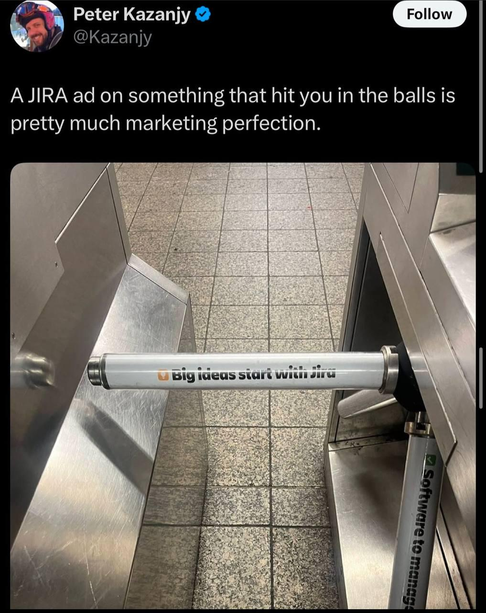

Asking engineers to manually update Jira status in 2026 is a workflow smell.
Uncertainty is uncomfortable. Leaders want to feel in control. They'll tell you it helps engineers grow, that stakeholders need predictability, that multi-team work needs alignment, that Jira is the shared language.

But customers don't interact with alignment. They interact with the product.
When you ask an engineer to "update the ticket," you pay for it in focus. It breaks flow and forces a context switch. It turns real work into status-writing, because reconstructing the narrative is a task by itself. Work evolves too—the best solution rarely matches the original ticket wording. Worst of all, it trains teams to optimize for appearances instead of outcomes.
Manual reporting is the wrong mechanism for visibility.
Here's a prompt draft for Claude Code, Cursor, Opencode, or Codex that generates status updates from the source of truth: code.
## Step 1: Pull Jira context
Fetch open tickets in active statuses (planned, in progress, review, QA, done) along with recent comments—those often contain the real story.
## Step 2: Read the repo
Collect commits and changed files from the last 7 days. Match commits to tickets using ticket IDs in commit messages, then pull diffs for matching commits.
## Step 3: Draft updates for each ticket
Include what changed in plain English, verification steps (open X, do Y, expect Z), what's next or what's blocked, and what became unnecessary after learning more.The trick is connecting Jira to your agent without flooding its context. The "connect everything" approach—big MCP servers with dozens of tools—burns tokens on capabilities you won't use. For this job, you only need a small interface: list tickets, read comments, post updates.
That's why I prefer wrapping Jira with a tiny Python skill instead of giving the agent a whole universe. I prototyped one with Claude and shipped it as a plugin:
https://github.com/mir/maratai/tree/main/claude-maratai-manager
┌─────────────────────────────────────────────────────────┐ │ │ │ 🍔 Big MCP server 🥗 Thin Jira skill │ │ │ │ "Everything you might need" "Exactly what you need" │ │ │ │ Lots of tools + docs Small set of scripts │ │ Expensive context Cheap context │ │ │ └─────────────────────────────────────────────────────────┘
Now I run one command:
/jira-status-updateIt reads commits, understands progress, and drafts (or posts) Jira updates.
So you decide: do you want to monitor reality, or what people had time to type?